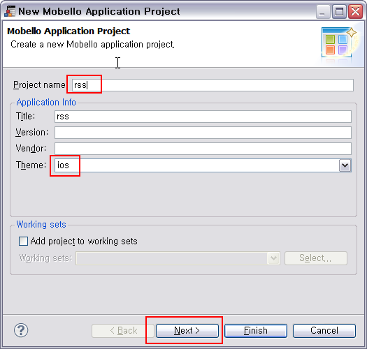
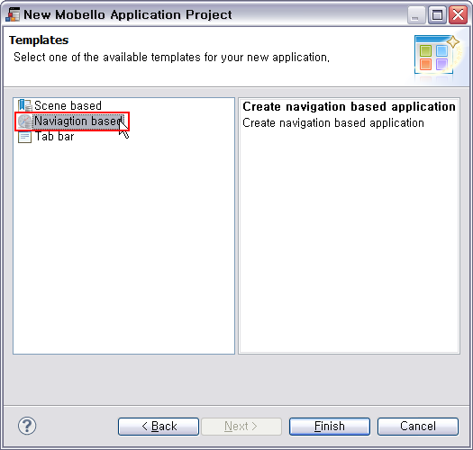
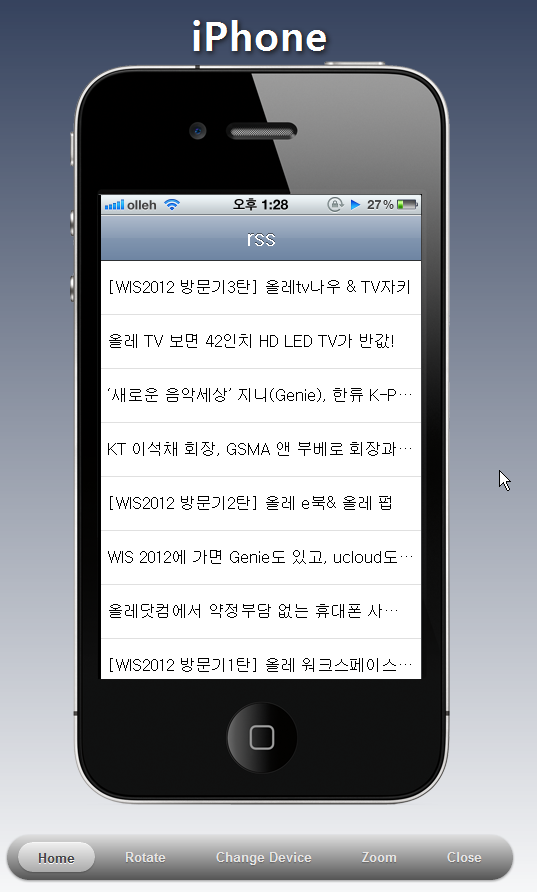
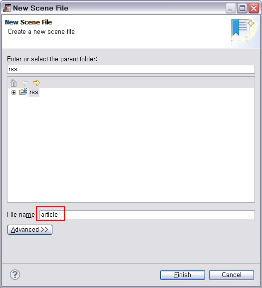
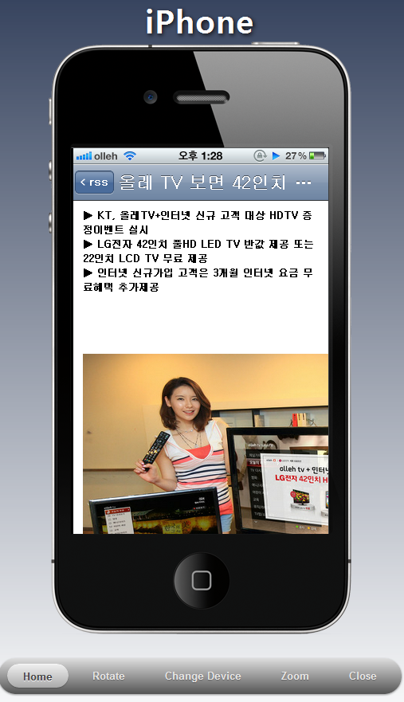

생성된 클래스 이름을 바로 변경할 수 있습니다. 클래스 이름은 'rss.DefaultController' 으로 변경합니다.
config.json 파일을 열고 다음 url 항목을 그대로 복사 합니다. 이제 앱을 실행하면 해당 url 로 부터 RSS 데이터를 가져와서 Table 을 통해 보여주게 됩니다.
요즘 대부분의 블로그는 누구나 사용할 수 있는 rss feed 를 제공하기 때문에 웹사이트에 접속하지 않고도 블로그의 컨텐츠를 접근하고 활용할 수 있습니다. 이 가이드에서는 olleh 공식 블로그에서는 제공하는 rss 를 활용하는 모바일 app 을 만들어 보도록 하겠습니다.
Mobello Application Project 위자드를 통해 프로젝트를 생성합니다. Project name 으로 'rss' 를 입력하고 Theme 는 'ios' 를 선택한 다음 Next 를 선택합니다.

위자드의 Templates 페이지 에서는 Navigation based 를 선택합니다.

default.js 를 열고 기존 내용은 지운 다음 영문자 'r' 을 입력하고 Ctrl 을 누른 상태에서 Space 를 두번 입력합니다. 여기서 나오는 목록중 RSSTableController 를 선택합니다.
생성된 클래스 이름을 바로 변경할 수 있습니다. 클래스 이름은 'rss.DefaultController' 으로 변경합니다.
config.json 파일을 열고 다음 url 항목을 그대로 복사 합니다. 이제 앱을 실행하면 해당 url 로 부터 RSS 데이터를 가져와서 Table 을 통해 보여주게 됩니다.
url: 'http://blog.olleh.com/rss/',
여기서 모든 파일을 저장하고 툴바의 Run 버튼으로 실행해 에뮬레이터에서 확인해 봅니다.

Scene File 위자드에서 article 이라는 이름의 scene 을 추가합니다.

생성된 article.js 를 열고 다음과 같이 코드를 수정합니다.
$class('rss.ArticleController').extend(tau.ui.SceneController).define({
ArticleController: function (opts){
this.article = opts;
this.setTitle(this.article.title);
},
});
article.scene 을 scene designer 를 통해 열고 TextView 컴포넌트를 배치합니다.

Attributes 뷰에서 TextView 컴포넌트의 text 속성을 @article.description 으로 지정합니다.

default.js 를 열고 파일의 첫 라인에 다음과 같이 article.js 를 require 로 선언합니다.
$require('/article.js');
default.js 의 cellSelected function 에서 article scene 에 대한 controller 인 rss.ArticleController 를 parent navigator 에 push 합니다. ArticleController 의 생성자 옵션으로는 article 객체를 넣어주어야 합니다.
cellSelected : function(current, before) {
var table = this.getTable();
var index = table.indexOf(current);
var article = this.feed[index[0]];
var navigator = this.getParent();
// push article view's controller
navigator.pushController(new rss.ArticleController(article));
},
드디어 app 이 완성되었습니다.
default.js 의 최종 코드는 다음과 같습니다.
$require('/article.js');
$class('rss.DefaultController').extend(tau.ui.TableSceneController).define(
{
DefaultController : function() {
this.appCtx = tau.getCurrentContext();
this.appConfig = this.appCtx.getConfig();
this.setTitle(this.appConfig.title);
},
loadModel : function(start, size) {
var table = this.getTable();
var max = start + size;
function load(resp) {
this.feed = resp.responseJSON.query.results.item;
size = (max < this.feed.length) ? size : this.feed.length - start;
table.addNumOfCells(size);
}
var reqUrl = 'http://query.yahooapis.com/v1/public/yql?q=select%20*%20from%20rss%20where%20url%3D%22'
+ encodeURIComponent(this.appConfig.url) + '%22&format=json';
tau.req({
type : 'JSONP',
jsonpCallback : 'callback',
url : reqUrl,
timeout : 20000,
callbackFn : tau.ctxAware(load, this)
}).send();
},
cellSelected : function(current, before) {
var table = this.getTable();
var index = table.indexOf(current);
var article = this.feed[index[0]];
var navigator = this.getParent();
// push article view's controller
navigator.pushController(new rss.ArticleController(article));
},
makeTableCell : function(index, offset) {
var cell = new tau.ui.TableCell();
cell.setTitle(this.feed[offset + index].title);
return cell;
},
});
에뮬레이터로 실행해본 결과는 다음과 같습니다.
